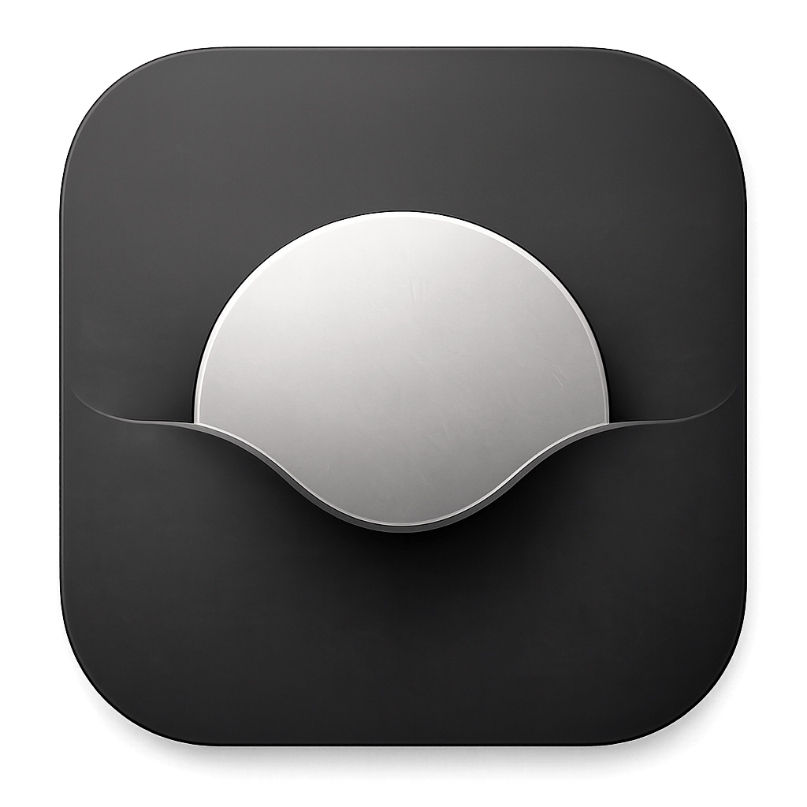

One layer above
your AI tools.
Run, organize, and coordinate every AI coding agent, session, and tool from one focused desktop workspace.
Cradle

Run, organize, and coordinate every AI coding agent, session, and tool from one focused desktop workspace.